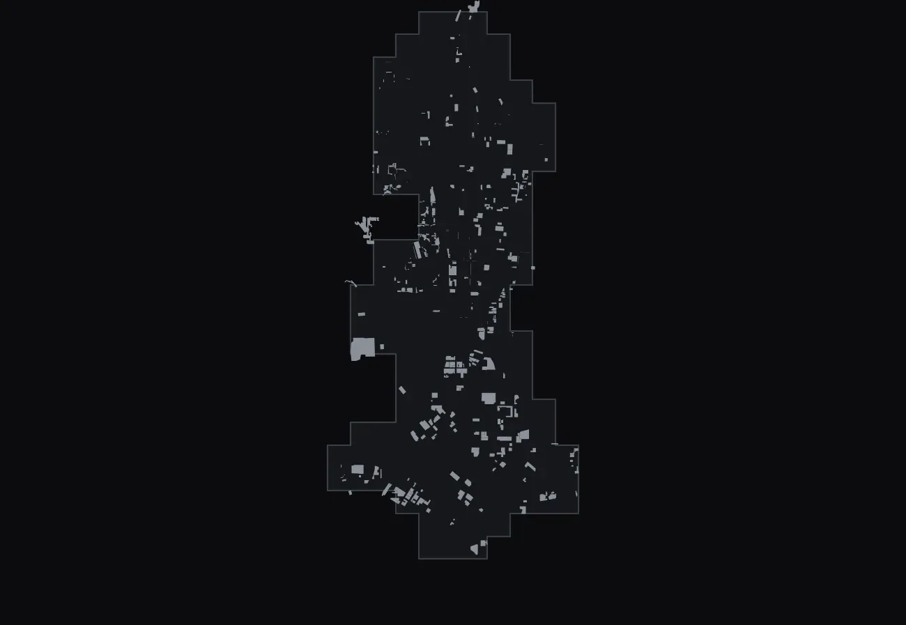
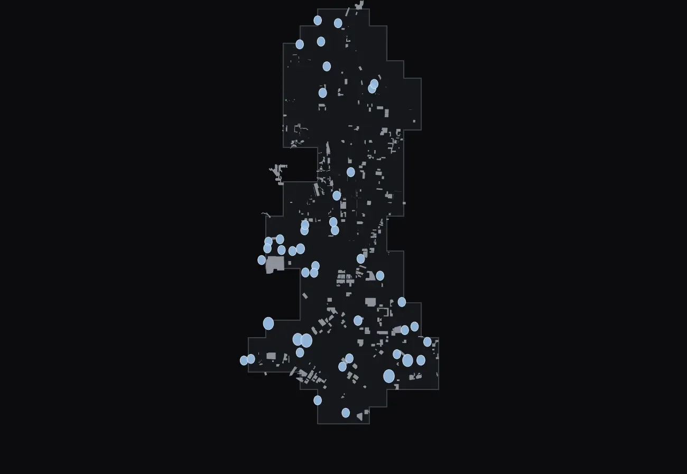

01Question
How much downtown land do U.S. cities give to surface parking, measured the same way everywhere, and which individual lots look like candidates for something else?

02Data
- OpenStreetMap surface parking lots, fetched November 2026.
- LEHD LODES 8 workplace jobs (2023) to define downtown.
- USDA NAIP aerial imagery for the AI model.
03Method
"Downtown" means different things in different cities, so I used one rule everywhere instead of official boundaries. Each lot is then checked against four criteria: at least 1.5 acres, within half a mile of the core, a transit stop within a quarter mile, and surrounding building coverage above the downtown median.
04Findings
The highest shares are in mid-sized downtowns: Albuquerque (20%), Birmingham (19%), St. Louis (18%), Buffalo (16%) and Indianapolis (15%).
OpenStreetMap undercounts parking in some cities, so these are lower bounds. A U-Net (MobileNet encoder) trained on 16 cities and tested on four held-out ones reached a pixel IoU of 0.32, against 0.08 for a colour rule, and found 70% of lots over an acre. It proposed 983 unmapped lots in 13 under-mapped downtowns; 467 are queued for human review.


Drag to compare. Left: lots already in OpenStreetMap. Right: 45 proposals from the model's Atlanta review set, sized by area.
05What it means for planning
Surface parking is the cheapest land to change downtown: it has no buildings to demolish and often sits next to transit. A consistent, lot-level inventory lets a city compare itself to peers, target parking reform where it matters, and shortlist sites for housing or open space, while the screen keeps the claims modest: these are candidates, not recommendations, until zoning and ownership are checked.
06My role & tools
Solo project: question, data pipeline, model, web app and writing. Python, GeoPandas, TensorFlow.js, MapLibre GL, GitHub Pages.